Bespoke
A self-initiated product-visualisation study for a high-street fragrance I actually wear. I remodelled, relit and re-marketed it from scratch in Blender to prove the brand could sell it far better than it currently does.
Spec concept. Unsolicited and unaffiliated. Not commissioned or endorsed by Bespoke London or Superdrug. Product name and packaging shown for illustrative, non-commercial purposes.
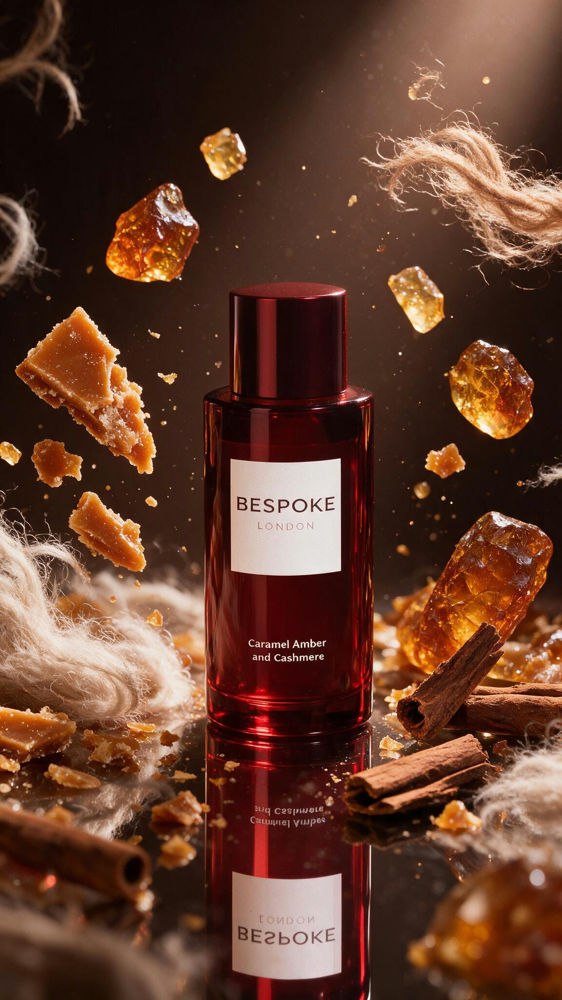
01. The spark
I started this
for the smell.
I genuinely love Bespoke London's Caramel Amber & Cashmere. It lasts all day, punches well above its high-street price, and the deep-red bottle is quietly beautiful. I wanted to learn Blender, look dev and product visualisation, so for my first real project I picked the object on my shelf I liked looking at most. Nobody briefed it. It just grew.
02. The problem
A great product,
marketed like an
afterthought.
Bespoke has a good product and a feed that doesn't show it: a repetitive grid of the same flat-lay, much of it low-res AI renders that read as "slop" up close. Engagement is near-zero for a brand this size.
The tell is in their own numbers: the one post that outperformed everything was a scrappy UGC clip: a real hand, a real product, a real moment. The audience is there; the brand just isn't giving them anything worth stopping for. That gap is exactly the kind of problem I want to solve.
03. Learning the craft
Making glass
look like glass.
The bottle was the whole point, and the hardest part. Modelling the form was one problem; making the red glass actually read as glass was another entirely. Getting refraction, thickness and the way light bends through the bottle to behave under real lighting took iteration after iteration. Early versions look like plastic. You can watch it slowly become glass.
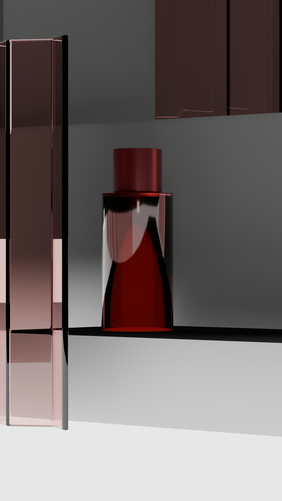
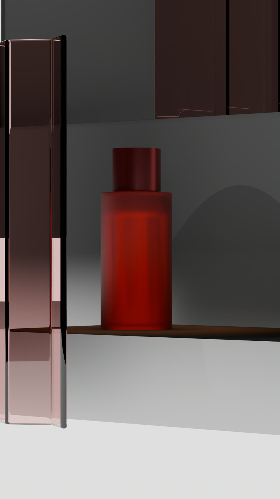
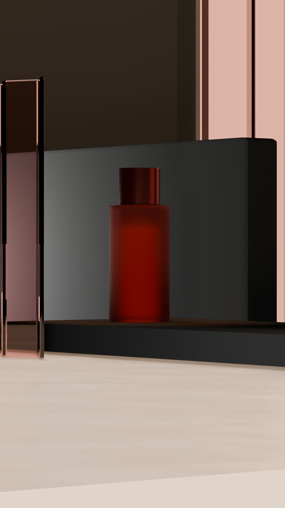
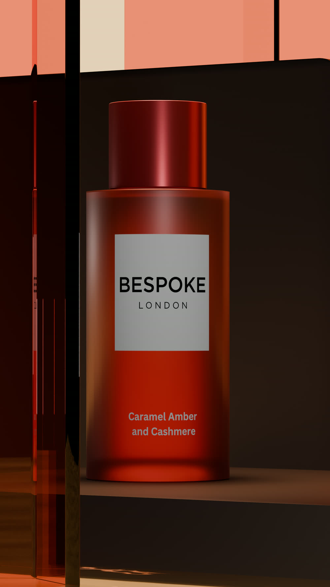
04. Look development
One bottle,
many moods.
With the model resolved, look dev became the real playground: lighting the same asset a dozen ways to find the fragrance's personality. Caramel Amber & Cashmere is warm, rich and a little nocturnal, so I chased that: molten amber gradients, hard crimson key lights, and specular streaks that rake across the glass to sell its depth.
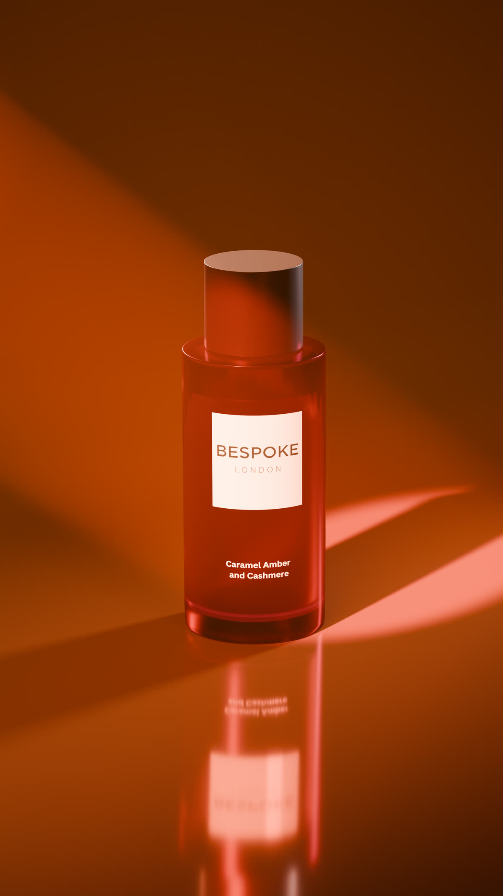
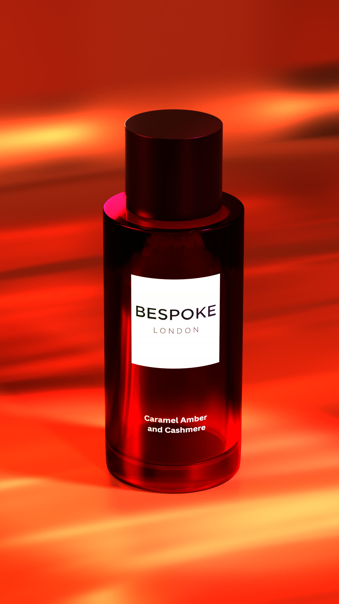
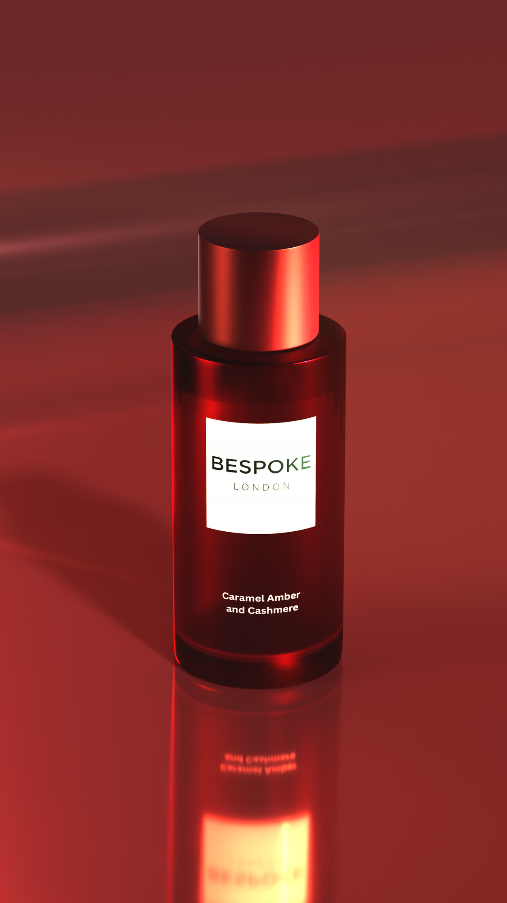
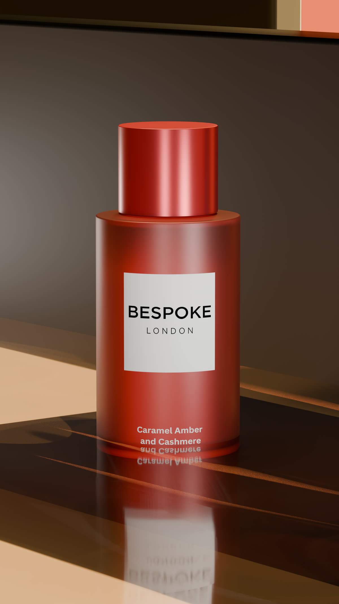
05. Art direction
Building a world
around it.
Great fragrance imagery isn't just a lit bottle, it's a scene. I built environments to push my composition and scene-making: faceted low-poly sets, near-black luxury backdrops, architectural corridors. The point was to practise directing an image, not just rendering an object: the difference between "here's the product" and "here's the feeling."
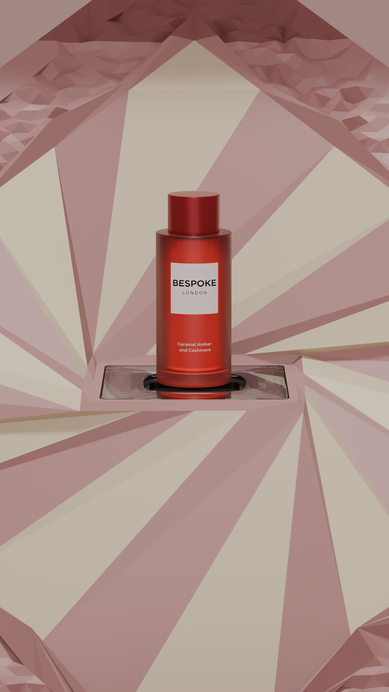
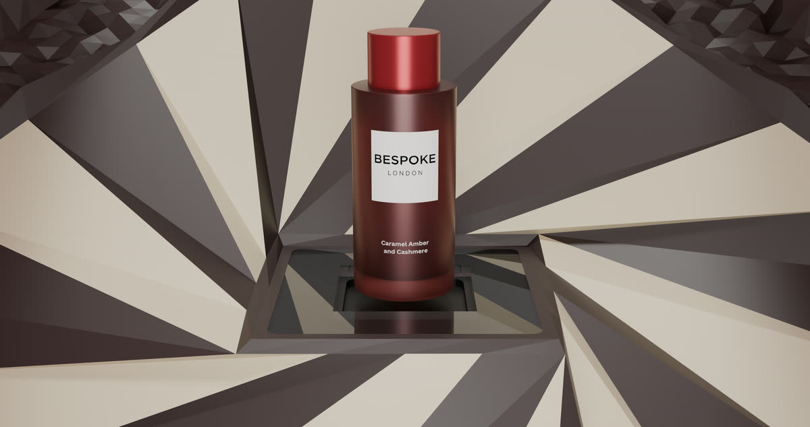
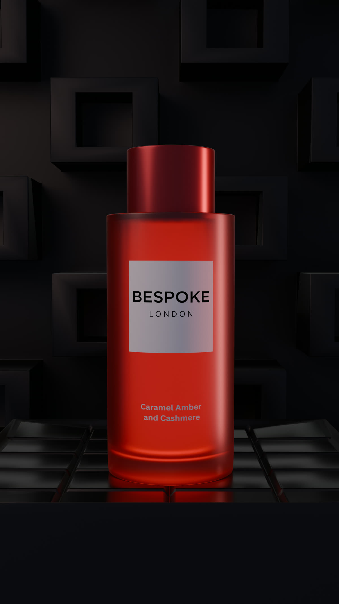
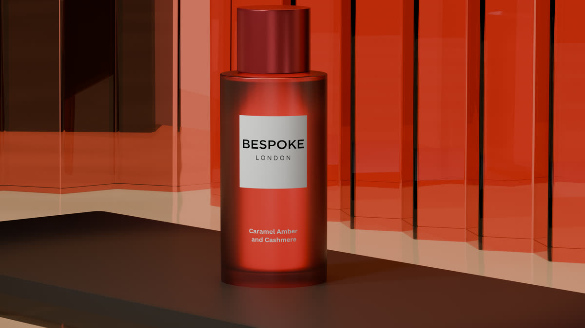
06. Motion
My first
animation.
The first thing I ever animated in Blender. Honestly, it's rough: loose timing, a camera move I'd stage differently now. But I'm keeping it in, because the growth is the story. Next step: rebuild it properly, then use clean 3D frames to direct AI motion and push quality up without the render times.
07. The bigger idea
A low-tick,
high-sale workflow.
Bespoke doesn't need a blockbuster budget. It needs to stop looking cheap. The unlock is a hybrid pipeline: model and light in 3D, then use my own renders as control frames to guide AI (Seedream 5.0 Pro) toward crisp, high-resolution stills and motion. Real geometry keeps it on-brand; AI removes the render-time ceiling: one person turning unused assets into a full campaign, without the AI-slop look.
Model
Accurate bottle geometry and real materials in Blender: the source of truth.
Light
Look dev per fragrance: each scent gets its own colour and mood.
Enhance
Renders guide the AI pass, then I clean up and upscale by hand. Resolution and polish up, cost and time down.
Move
Direct AI motion from clean 3D frames into scroll-stopping social video.
08. The proof
The pipeline,
running.
Not mockups: actual output. Each film started as my Blender model and label, went through the AI pass, then was cleaned up and upscaled by hand to reach campaign quality. Two different scents, two different worlds, one repeatable process. Tap "prompt" on either clip to see exactly how it was directed.
Prompt ↗
A golden perfume bottle with the label "BESPOKE LONDON" stands in the center of the frame. To its left, a large piece of honeycomb and a sprig of fern are visible. To its right, two medium sized pieces of dark, textured wood are placed. In the background we are in a outside cozy natural space, the silhouette of a woman figure similar resemblance to the bottle as if the bottle cast the shadow is cast on a light-colored wall, illuminated by warm, directional light that creates a dramatic effect. The overall aesthetic is luxurious and sophisticated, with a focus on natural elements and soft lighting.
Prompt ↗
Premium perfume advertising shot of a deep-red Bespoke London bottle, upright and hero-lit, with caramel shards, amber resin chunks, cashmere-soft wool fibres and cinnamon bark suspended in orbit around it, frozen mid-motion. Dark chocolate-brown backdrop with a warm spotlight pool. Dramatic side lighting, glossy specular highlights on the glass, fine dust particles catching the light. Luxury fragrance campaign, macro clarity, photorealistic, 8k.
Two scents, two worlds, one repeatable pipeline: real geometry in, campaign-grade stills and motion out, without the AI-slop look.